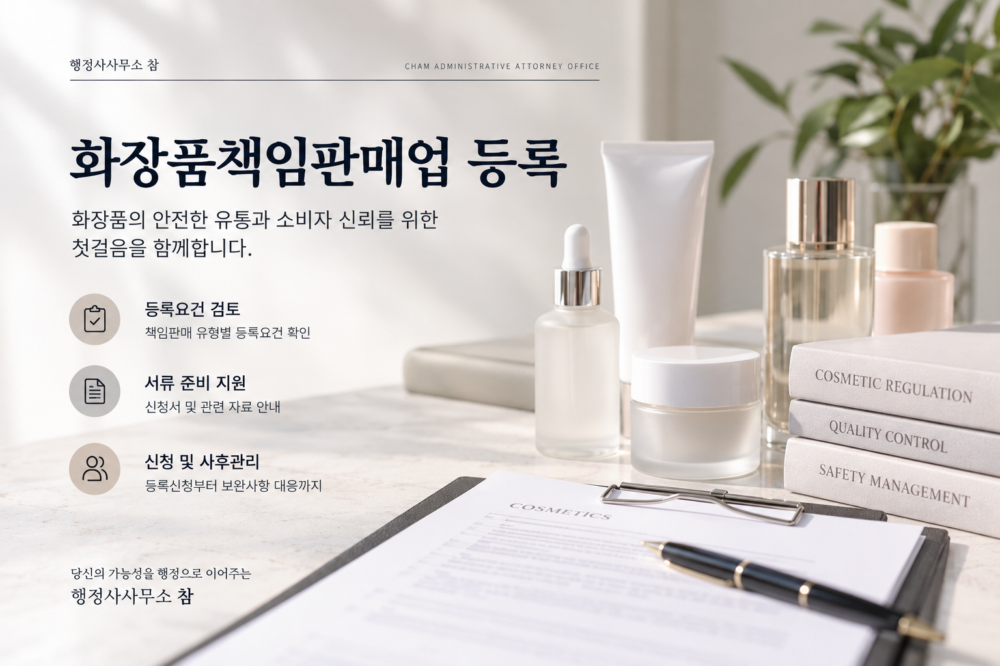
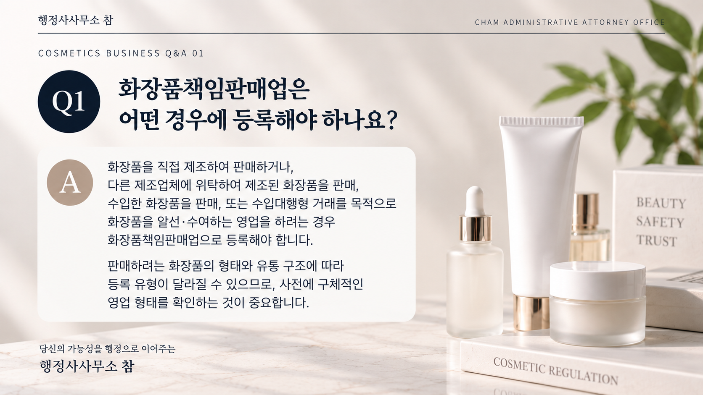
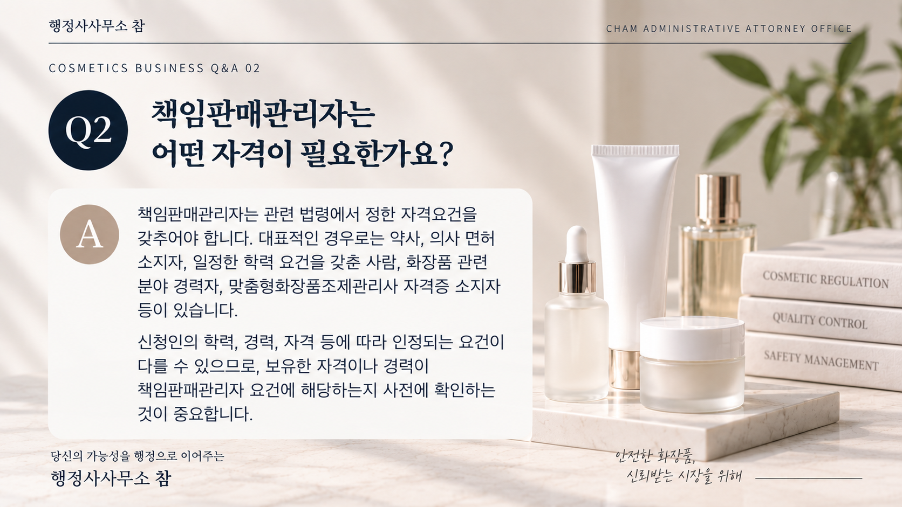
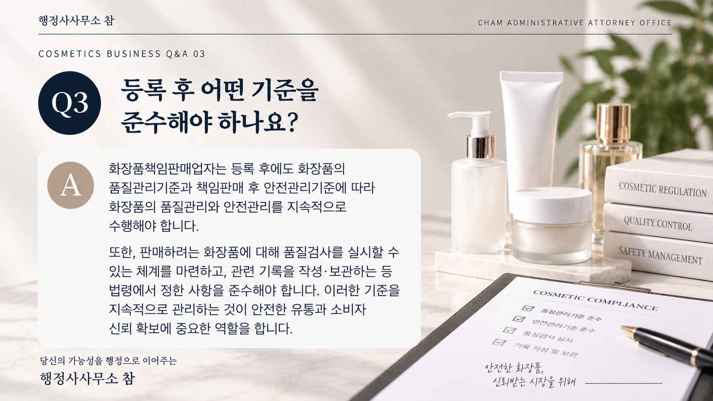

특히 책임판매 유형과 책임판매관리자의 자격, 품질관리 및 책임판매 후 안전관리 체계 등을 사전에 확인하는 것이 중요합니다.

01. 화장품책임판매업이란?
화장품책임판매업은 취급하는 화장품의 품질 및 안전 등을 관리하면서 이를 유통·판매하거나 수입대행형 거래를 목적으로 알선·수여하는 영업을 말합니다.
따라서 화장품을 판매한다고 해서 모두 동일한 형태의 책임판매업에 해당하는 것은 아니며, 실제 제조·수입·유통 구조를 기준으로 등록 대상과 유형을 먼저 확인해야 합니다.
02. 어떤 경우에 등록을 검토해야 하나요?
대표적으로 다음과 같은 형태로 화장품 사업을 하려는 경우 화장품책임판매업 등록 여부를 확인해야 합니다.
- 직접 제조한 화장품을 유통·판매하는 경우
- 제조업체에 위탁하여 생산한 화장품을 유통·판매하는 경우
- 해외에서 화장품을 수입하여 국내에 유통·판매하는 경우
- 수입대행형 거래를 목적으로 화장품을 알선·수여하는 경우
사업 형태에 따라 적용되는 준비사항과 제출자료가 달라질 수 있으므로 실제 영업구조를 기준으로 판단하는 것이 필요합니다.

03. 책임판매관리자를 확인해야 합니다
화장품책임판매업을 준비할 때 중요한 사항 중 하나가 책임판매관리자입니다.
일반적인 책임판매업에서는 관련 법령에서 정한 자격요건을 갖춘 책임판매관리자를 두어야 하므로, 등록 전에 지정하려는 사람이 자격요건을 충족하는지를 확인해야 합니다.
주로 확인하는 사항
- 관련 면허 또는 자격 보유 여부
- 관련 전공 및 학력 요건
- 화장품 관련 업무경력
- 그 밖에 법령에서 인정하는 자격 해당 여부
신청인의 학력이나 경력에 따라 필요한 증빙자료도 달라질 수 있으므로 단순히 직책만 책임판매관리자로 지정해서는 안 됩니다.

04. 품질관리와 안전관리 체계도 중요합니다
화장품책임판매업자는 판매하는 화장품의 품질과 안전을 지속적으로 관리해야 합니다.
따라서 등록 준비과정에서는 품질관리기준과 책임판매 후 안전관리기준에 따른 관리체계를 확인해야 합니다.
- 화장품 품질관리에 관한 사항
- 제품의 안전정보 수집 및 관리
- 품질검사 실시체계 확인
- 관련 기록의 작성 및 보관
이러한 사항은 단순히 등록할 때 제출하는 서류에 그치는 것이 아니라 등록 후 실제 영업과정에서도 계속 관리해야 하는 사항입니다.

05. 등록신청 시 주요 준비사항
구체적인 제출자료는 책임판매 유형과 신청인의 상황에 따라 달라질 수 있지만 일반적으로 다음 사항을 중심으로 검토합니다.
- 화장품책임판매업 등록신청서
- 책임판매관리자 자격을 확인할 수 있는 자료
- 품질관리 관련 준비자료
- 책임판매 후 안전관리 관련 준비자료
- 시험검사 관련 사항
- 신청 유형에 따라 추가로 필요한 자료
특히 수입대행형 거래 등 일부 영업 형태는 일반적인 책임판매업과 적용되는 제출자료가 다를 수 있으므로 영업유형을 먼저 정확하게 확인하는 것이 좋습니다.
06. 등록은 어떻게 진행되나요?
화장품책임판매업 등록은 영업소 소재지를 관할하는 지방식품의약품안전청에 신청합니다.
온라인 신청은 의약품안전나라를 통해 할 수 있으며, 관할 지방식품의약품안전청에서 제출자료 등을 검토합니다.
책임판매업 등록의 민원 처리기간은 통상 10일입니다.
※ 보완이 필요한 경우 실제 처리기간은 달라질 수 있습니다.
07. 등록 후에도 관리가 필요합니다
책임판매업은 등록증을 발급받는 것으로 모든 절차가 끝나는 것은 아닙니다.
등록 후에는 책임판매관리자 교육을 비롯하여 품질·안전관리, 실적 및 원료목록 보고 등 영업자가 계속 이행해야 하는 사항이 있습니다.
- 책임판매관리자 관련 교육
- 품질관리 및 안전관리 기준 준수
- 화장품 관련 기록 관리
- 해당되는 실적 및 원료목록 보고
- 등록사항 변경 시 필요한 변경절차 확인
따라서 처음 등록할 때부터 실제 사업 운영방식까지 고려하여 관리체계를 준비하는 것이 중요합니다.
08. 신청 전에 이것부터 확인하세요
- 내 사업이 화장품책임판매업 등록 대상인지
- 어떤 책임판매 유형에 해당하는지
- 책임판매관리자를 지정할 수 있는지
- 책임판매관리자의 자격을 증명할 수 있는지
- 품질관리·안전관리 체계를 준비할 수 있는지
- 판매하려는 화장품의 품질검사 방법을 확인했는지
위 사항 중 판단하기 어려운 부분이 있다면 등록신청 전에 사업 형태와 준비자료를 함께 검토하는 것이 좋습니다.
화장품책임판매업 등록을 준비하고 계신가요?
간단한 자가진단으로 현재 준비상태를 확인하거나 상담을 통해 등록요건을 검토할 수 있습니다.